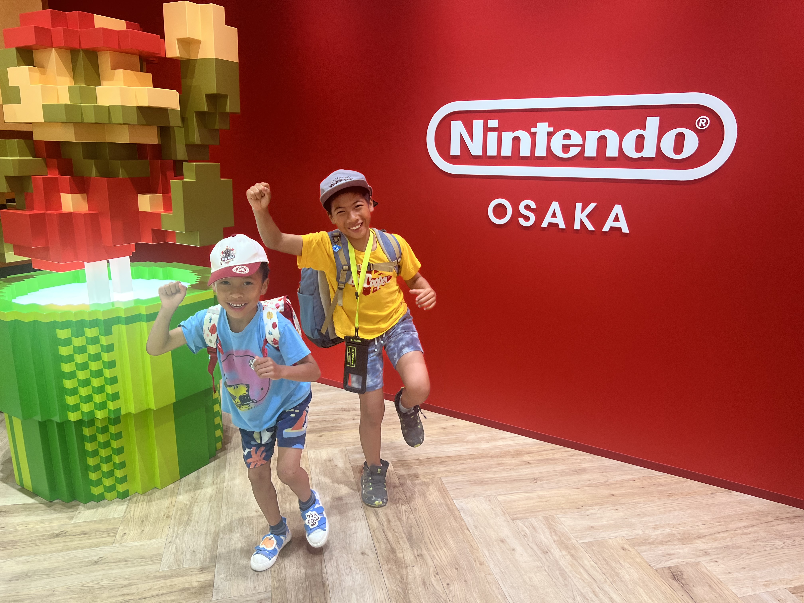

遊
任天堂・大阪
The Room Where Everything Was Life-Size
Ten years of pixels, suddenly at eye level. Neither of them spoke for a full ten seconds. That is the most concentrated silence this family has ever produced.
任天堂・大阪
The Room Where Everything Was Life-Size
Nintendo Osaka at Grand Front Osaka is Japan's first full-scale Nintendo flagship store. The entrance opens onto a floor of characters rendered at human height: a Piranha Plant taller than both boys, a Mario universe in three dimensions that refuses to be modest. We had reserved timed-entry slots a month in advance. Worth every click.